|
“Sesiones de Robótica”. Comunidad de Madrid. UPSAM. Abril-2005 |
|
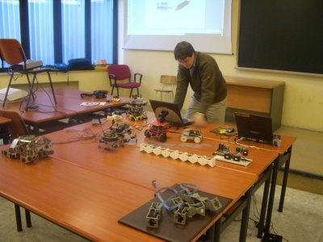 |
Título: “Sesiones de Robótica”
Duración: 3h, divididas en 4 sesiones
Evento: Sesiones de Robótica para institutos
Organiza:Comunidad de Madrid
Lugar: Facultad de Informática. Universidad Pontificia de Salamanca en Madrid, UPSAM.
Fecha: 9 de Abril de 2005
Ponentes:
Charla de divulgación sobre la robótica dividida en 4 sesiones:
Sesion I: Robots en directo
Demostraciones en vivo de diferentes robots, con la idea de motivar. Se comienza por el más sencillo de todos, el Skybot, un robot seguidor de líneas muy simple que sirve para iniciarse en el mundo de la robótica. Hecho con piezas de PVC, es muy fácil de construir, utilizando cualquier otro material: madera, plásticos, aluminio, etc. Utiliza las tarjetas Skypic y CT293 y como motores se emplean dos servos Futaba 3003 “trucados”. El robot “los ojos” es un ejemplo de un robot articulado controlado desde el PC. Tiene dos minicámaras con dos grados de libertad cada una. Se pueden grabar secuencias de movimiento y actuar sobre las cámaras por medio de un canvas. Los siguientes tres robots están basados en modelos animales. Uno es Cube Revolutions, un robot gusano que es capaz de moverse en línea recta y adoptar diferentes formas, parecido a como se mueven los gusanos de seda. Es un robot de investigación. Otro es la hormiga “Benita”, un robot hexápodo, con dos servos por pata, realizado en el año 1998 que demuestra que es posible hacer robots baratos y robustos. El tercero es PuchoBot, un perro robot, con 3 articulaciones por patas. Puede funcionar tanto en modo autónomo como conectado al PC. Finalmente se hace una demostración del robot Observer, desarrolado en el Club de Robótica-Mecatrónica de la UAM. Un robot telecontrolador desde el PC a través de Radio, que lleva incorporado una minicámára.
Sesion II: Elementos de un robot
En esta sesión se muestran las diferentes partes que componen un robot móvil. Se enseñan distintas estructuras mecánicas básicas, se explican los tipos de motores que hay y cómo se controlan, la electrónica o “cerebro” del robot, la etapa de potencia que permite mover los motores desde un microcontrolador y finalmente se da un repaso a los sensores más empleados y que son facilmente adquiribles por cualquiera.
Sesion III: Robótica e investigación
La robótica es un campo muy activo donde se están realizando muchas investigaciones. En esta sesión se muestra uno de los robots construido con fines de investigación: el robot ápodo Cube Revolutions. Está constituido por 8 módulos iguales unidos en cadena. El robot puede cambiar su forma y desplazarse de diferentes maneras, utilizando ondas que recorren su cuerpo. Se hacen muchas demostraciones para mostrar que la investigación es un campo “muy divertido”, donde la única limitación es la imaginación. Se concluye mostrando los últimos experimentos realizados: el robot Multicube. Cómo uniendo unos módulos muy sencillos se consigue movimientos complejos.
Sesion IV: Robótica y Empresa
La robótica tiene la características de ser multidisciplinar. Hay que tener conocimientos de mecánica, electrónica y software. En esta sesión se muestra cómo los conocimientos aprendidos haciendo robots simples, o como muchos los llaman, “juguetitos”, se aplican en la empresa para hacer proyectos reales. Se describen los proyectos que está desarrollando la empresa de ingeniería Ifara Tecnologías.
|
Descarga de la presentación |
|
robotica-upsam-abr-05-sension1.sxi (2,3 MB) |
Sesión I: Robots en directo. Presentación para OpenOffice 1.1.3 |
|
Sesión I: Robots en directo. Presentación en PDF |
|
|
Sesión II: Elementos de un robot. Presentación OpenOffice 1.1.3 |
|
|
Sesión II: Elementos de un robot. Presentación en PDF |
|
|
upsam-abril-05-sesion3.sxi (4,1MB) |
Sesión III: Robótica e investigación. Presentación OpenOffice 1.1.3 |
|
upsam-abril-05-sesion3.pdf (1,8MB) |
Sesión III: Robótica e investigación. Presentación en PDF |
|
Sesión IV: Robótica y empresa. Presentación en OpenOffice 1.1.3 |
|
|
Sesión IV: Robótica y empresa. Presentación en PDF |
Se condecen permisos para usar, modificar y/o distribuir esta presentación, siempre que se mantenga esta nota.
Ifara Tecnologías: Empresa de ingeniería y sistemas
Tarjeta Skypic, entrenadora para microcontroladores PIC de 28 pines.
Tarjeta ct293+. Control de motores y sensores.
Cuaderno técnico II, trucaje de los servos Futaba
Cuaderno técnico III. Servos Futaba 3003. Características, planos y modelo 3D.
Artículo presentado en el Clawar 2004, sobre Cube Revolutions: “Locomotion of a Modular Worm-like Robot using a FPGA-based embeded MicroBlaze Soft-processor”
Taller en la UAX. I taller de robótica celebrado en la universidad Alfonso X el Sabio, en Madrid.
Perro robot PUCHOBOT.
Robot Cube Revolutions
Robot ápodo Cube Reloaded (Versión anterior a Cube Revolutions)
Programa star-servos8 para el control de 8 servos desde el PC
Aplicación libre QCAD, para diseño en 2D. Disponible en Debian (apt-get install qcad)
Aplicación libre Blender, para diseño en 3D. Disponible en Debian (apt-get install blender)
Aplicación libre KICAD, para diseño de circuitos electrónicos.
Programa Eagle para diseño de circuitos electrónicos. No libre. Disponible en el repositorio non-free de Debian
Plataforma de desarrollo software Mono (.NET para Linux)
Librerías gráficas GTK
Librerías gráficas GTK#
La charla se dió el sábado 9 de Abril, en la Univesidad Pontificia de Salamanca en Madrid (UPSAM). Yo acaba de llegar de la Robolid05, donde había dado otra charla junto con Alejandro Alonso. Como el mundo es un pañuelo, conocí a Fernando Remiro en Valladolid y resulta que era uno de los profesores que iban a asistir a las sesiones de robótica en la UPSAM :-)
Como es habitual en este tipo de charlas, Andrés Prieto-Moreno yo (Juan González) llegamos con media hora de antelación para ir montando el “despliegue” de robots. En la foto de la izquierda se puede ver a Andrés junto con todos los robots: PuchoBot, Benita, Los ojos, el clónico, Cube Revolutions, Muticube, Observer, Skybot y ese rojo que está en frente de Andrés que todavía no ha sido bautizado. A la derecha se ve el despliegue desde otro ángulo y a algunos asistentes que iban llegando. Para hacer las demos y controlar todos los robots utilizamos dos ordenadores portátiles, con Linux instalado por supuesto :-)
|
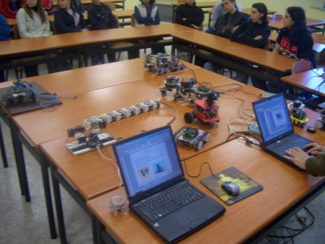 |
Víctor Martín, Vicedecano de la Facultad de Informática de la UPSAM, fue el organizador de las sesiones. En la foto inferior está conversando con algunos alumnos, a la espera del resto de los asistentes.
|
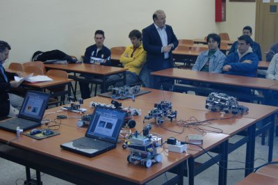 |
Asistieron alumnos de dos institutos. Siempre es un placer poder mostrar a estos alumnos los “inventos” que se pueden realizar con un poco de imaginación. Ellos son las nuevas generaciones y hay que motivarlos. En la Universidad se aprenden muchos conceptos teóricos pero también es posible ponerlos en práctica y divertirse mucho ;-)
|
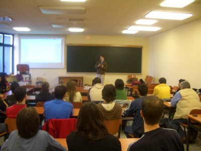 |
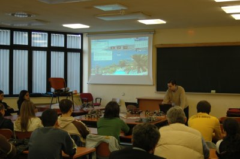 |
En la foto de la izquierda están todos los alumnos de los institutos y en la parte delantera están los profesores Fernando Remiro y Antonio Gil. En la foto de la derecha, de izquierda a derecha: Antonio Gil, Andrés Prieto-Moreno, Fernando Remiro y Juan González.
|
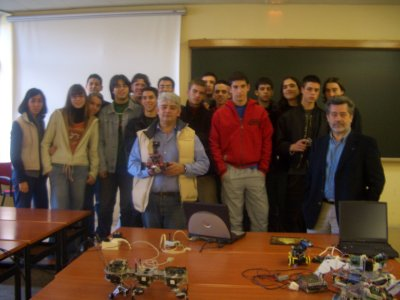 |
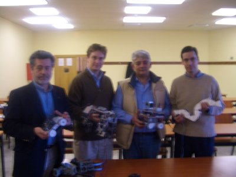 |
Al final de la charla los alumnos se acercaron para poder ver los robots de cerca, tocarlos, manejarlos y hacerse fotos.
|
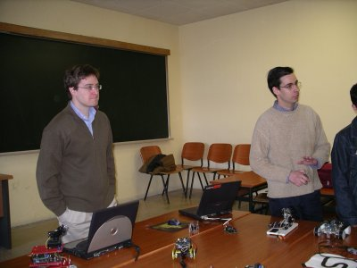 |
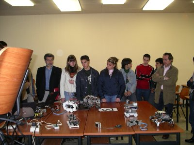 |
En la izquierda está la hormiga Benita, que con más de siete años todavía sigue dando guerra. En el centro está PuchoBot descansando y en la derecha el robot Clónico.
|
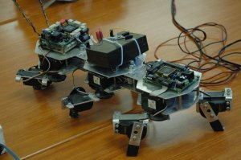 |
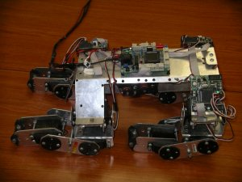 |
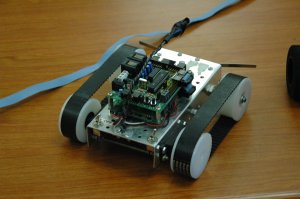 |
Izquierda: el clónico junto al robot de exploración sin bautizar todavía. Centro: “los ojos” junto a la cola de Cube Revolutions. Derecha: tres configuraciones de Multicube.
|
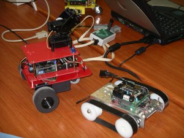 |
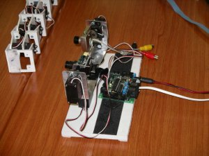 |
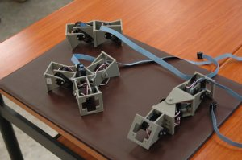 |
A Víctor Martín, Vicedecano de la Facultad de Informática de la UPSAM, por llamarnos para estas sesiones.
A Ifara tecnologías, por contar conmigo para dar una charla.
A Andrés Prieto-Moreno por gestionar y prepararlo todo. Yo sólo tuve que ir y hablar :-)
A Fernando Remiro por las fotos
1/Enero/2005: Añadido enlace a Cube Revolutions
8/Mayo/2005: Publicada información en esta web